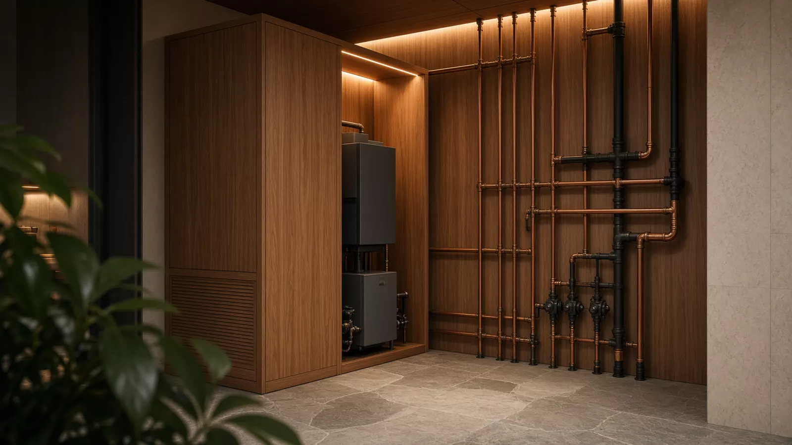

Что мы умеем · 04 · Водоснабжение
Скважина или городской ввод — не важно. Важно, что из крана идёт та вода, которую вы задумали.
Прокладка: от ввода до коллектора в тёплом узле. Трубы в стяжке — с картой.
Фильтры под анализ. Гидроаккумулятор, который не орёт в три ночи.
Обслуживание: промывка, картриджи, давление — график, как у котельной.
Что входит
Рядом по смыслу
Консультация